#install.packages("ggplot2")Part 3 - ggPlot and Data Visualization
You probably have some intuitive sense that visualization is important for communicating information or data to an audience. I would argue that data visualization is not just important, but is one of the most important components of any data analysis project. Visualization is more than just making a graph, but should be considered as a fairly involved process of analyzing data, determining the best way to present it, and then building a concise, effective graphic. As we move through this tutorial, you might find that the most challenging skills you’ll be developing will not be the coding itself, but deciding how to use the code to turn data into effective visualizations.
R is a popular coding language for data visualization. While base R does have a range of graphics commands, the real advantage comes from the myriad packages that have been developed for data visualization. These packages tend to improve on the capabilities of base R (on either the computational or the aesthetic fronts), and can be used to expand the accessibility of a wider range of data visualizations. One of the more prominent packages for data visualization is called ggPlot. There are several advantages to using ggPlot over other graphics packages, including the use of an intuitive syntax (once you learn how it works). We will also focus on ggPlot because it is an integral part of something called the “Tidyverse”, a collection of packages designed specifically for data science, that share an underlying design philosophy and code syntax.
Because ggPlot is such a popular package, there are many available resources that are both more extensive and more thorough than this single tutorial can be. Chief among these resources are the books “ggPlot2: Elegant Graphics for Data Analysis” by Hadley Wickham (who designed this package) and the “R Graphics Cookbook” by Winston Chang. Both are available for free here and here. These are fairly comprehensive resources and are sure to be useful to work through if you’re looking for a rigorous course on ggPlot. Keep in mind though that both R and the ggPlot package is an evolving language and there are already several instances in both books where code details are now out of date.
Installation
This tutorial contains the first functions we’ll use that are not part of base R and do not come “pre-loaded” when you open R Studio. There are many examples of these functions that will become staples in your R projects. Many of these are available as “packages”, collections of functions that can be loaded into the R environment. Installing and loading (most) packages is very straightforward in R. Many R packages are stored on CRAN (the Comprehensive R Archive Network). You can install packages from CRAN using the function install.packages().
Once a package has been installed, it has to be loaded into the R environment, or “turned on” before you can access those functions. To do this, use the library() function. Note the difference in the use of quotation marks between install.packages() and library().
#library(ggplot2)It’s usually a good idea to load all necessary packages at the beginning of a script. This helps make it easier to keep track of what’s been loaded during a scripted analysis.
The Syntax and Structure of a ggPlot
Like several other R packages, ggPlot allows you to make data graphics. What sets ggplot apart from many of these other packages though, is the utilization of a consistent grammatical structure. A ggPlot graphic is based on various independent components, which can be combined in many different ways to produce unique, effective data visualizations. While this is one of ggPlot’s biggest advantages, it also creates the biggest obstacle to using ggPlot - you do not have a set of pre-specified graphics to pull from, and instead, have to build all of your graphics from the ground up. This is often referred to as the “layered grammar” of graphics.
At its core, a data visualization is based on mapping data to geometric objects (points, lines, bars, etc.) with aesthetic attributes (colour, shape, size, etc.). Statistical transformations of the data or axes also constitute important layers in a ggPlot object. Facetting allows you to break data apart in order to visualize different groups independently. These features, along with several others, represent the independent components that ggPlot combines to create graphics. The order in which features occur in the code behind a ggPlot determines the order they appear in the graphic (hence the layered nature of this grammar).
There are two caveats before we jump into the components of a ggPlot:
1. A graphics grammar does not tell you what type of graphic to make with the data you have or question you’re interested in. For that, you will have to think carefully about the type of data you are visualizing, the main point you want to convey, and the audience your graphic is intended for.
2) The specific grammar we will cover applies only to static figures (figures that convey as much information when displayed on a computer screen as when printed on a page of paper). Dynamic, or interactive graphics require other packages, and other grammars. One package / grammar to keep an eye on is ggvis, a proposed eventual replacement for ggPlot which will extend a single grammar across both static, dynamic, and interactive graphics.
For the purpose of this tutorial, we’ll use a data set examining various size measurements for penguins collected as part of a Long Term Ecological Research (LTER) project at Palmer Station, on the Western Antarctic Peninsula. Data can be accessed by installing the package “palmerpenguins” from CRAN. Don’t forget to load the package into the R environment once you’ve done this! By loading this package, you’ve also loaded the data set into the R environment (even if it doesn’t show up in the Global Environment window). If you successfully installed and loaded the package, you should be able to see part of the data set using head(). This function shows the first few lines of a dataset.
head(penguins)
## # A tibble: 6 × 8
## species island bill_length_mm bill_depth_mm flipper_l…¹ body_…² sex year
## <fct> <fct> <dbl> <dbl> <int> <int> <fct> <int>
## 1 Adelie Torgersen 39.1 18.7 181 3750 male 2007
## 2 Adelie Torgersen 39.5 17.4 186 3800 fema… 2007
## 3 Adelie Torgersen 40.3 18 195 3250 fema… 2007
## 4 Adelie Torgersen 36.7 19.3 193 3450 fema… 2007
## 5 Adelie Torgersen 39.3 20.6 190 3650 male 2007
## 6 Adelie Torgersen 38.9 17.8 181 3625 fema… 2007
## # … with abbreviated variable names ¹flipper_length_mm, ²body_mass_gggPlot Components
You essentially start with a blank canvas.
ggplot()
A ggPlot graphic is built in layers from there. The data and a set of “global aesthetics” are generally defined in this first layer. Defining the data is fairly intuitive - you just need to tell ggPlot which dataframe (it should be a data frame, not a matrix) you’ll be visualizing data from. The aesthetics include things like which columns specify the x- and y-axes.
ggplot(penguins, aes(x = body_mass_g, y = bill_length_mm))
Now our blank canvas includes labeled axes, with “body_mass_g” on the x-axis and “bill_length_mm” on the y-axis. The data and aesthetics you define in this initial step become the defaults for every other layer you define (which is why they’re often called “global” aesthetics). You can, however, override these and define new data or aesthetics for individual layers if needed.
You’ll notice, however, that there isn’t actually any data displayed yet. After defining the global aesthetics, you need to add the actual visual elements that show the data. These are called “geometric layers”, or geoms for short. These include things like points, lines, and boxes. Remember, these geoms inherit their aesthetic values and data as defined by your global aesthetics. We’ll add points to the graphic in the next plot.
ggplot(penguins, aes(x = body_mass_g, y = bill_length_mm)) +
geom_point()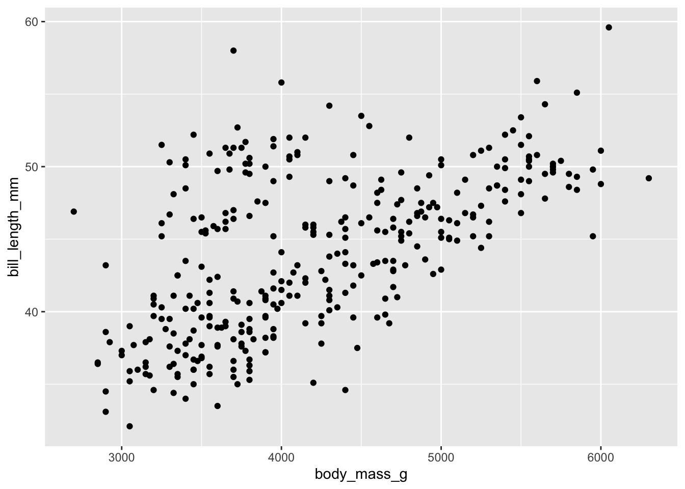
Now we can see the underlying data. Bill length is plotted against the body mass of the individual. It looks like bill length generally increases with body mass. However, these measurements were made for multiple species of penguins. You’d probably want to show this in the figure, so we’ll now add in another aesthetic, specifying that data for the different species should be shown in different colors.
ggplot(penguins, aes(x = body_mass_g, y = bill_length_mm, colour = species)) +
geom_point()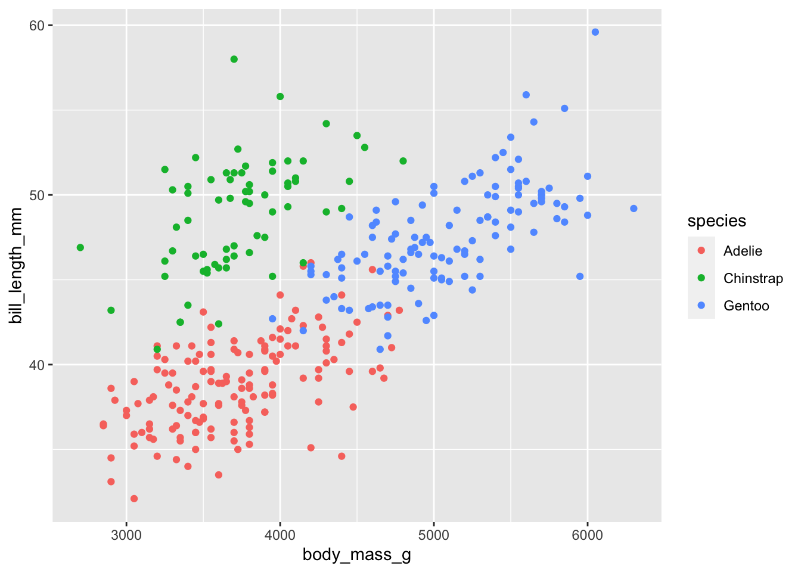
Data was collected across several years. Let’s plot the data again using different shapes for the different field seasons. We’ll also separate out the aesthetic arguments, one per line to make it a bit easier to keep track of them.
ggplot(penguins, aes(x = body_mass_g,
y = bill_length_mm,
colour = species,
shape = year)) +
geom_point()
## Error in `geom_point()`:
## ! Problem while computing aesthetics.
## ℹ Error occurred in the 1st layer.
## Caused by error in `scale_f()`:
## ! A continuous variable cannot be mapped to the shape aesthetic
## ℹ choose a different aesthetic or use `scale_shape_binned()`Our first error! ggPlot is telling us that it’s having trouble assigning shapes to the year. Check the structure of the penguins dataset. What type of data is ‘year’? We can address this issue by coercing ‘year’ to a factor. This tells ggPlot that instead of interpreting ‘year’ as a number, it should treat it as a grouping ID. After you’ve plotted this data, check the structure of the penguins data again. Why didn’t ‘year’ change class?
ggplot(penguins, aes(x = body_mass_g,
y = bill_length_mm,
colour = species,
shape = as.factor(year))) +
geom_point()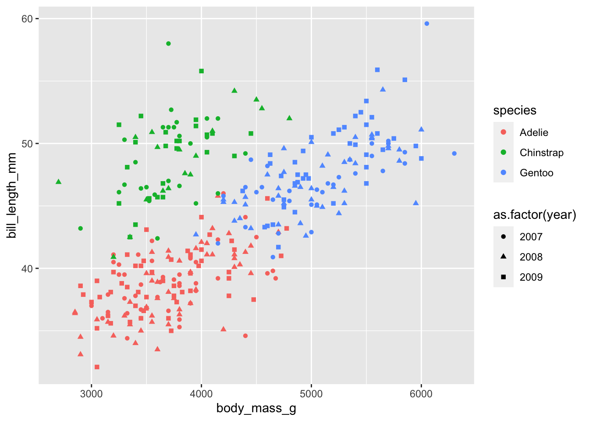
Now that the data is successfully plotted, we have another issue. There’s starting to be too much going on in this plot, and it makes it difficult to pick out interesting patterns (if they exist). One way to cope with this is to “facet” your plot - to separate out the data into different panels for different. We’ll group the data by the year measurements were made.
ggplot(penguins, aes(x = body_mass_g,
y = bill_length_mm,
colour = species,
shape = as.factor(year))) +
geom_point() +
facet_grid(as.factor(year)~.)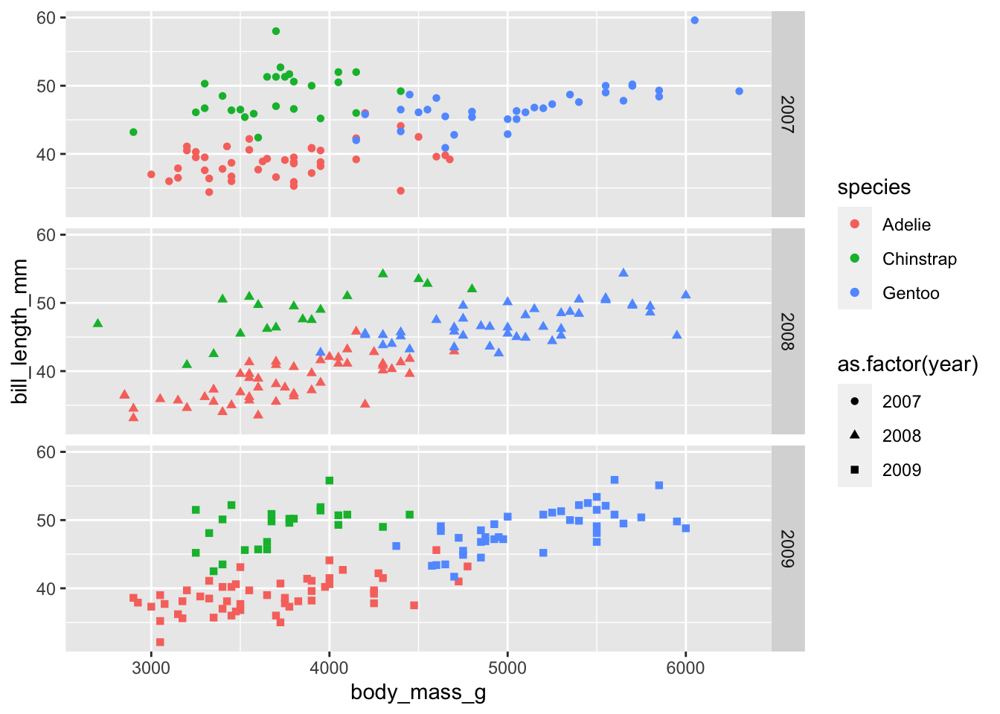
ggPlot graphics are often developed iteratively, adding and changing layers as you go until the graphic suits your needs and satisfies your individual sense of aesthetics. Essentially any feature on a ggPlot can be customized manually, but there are helpful “presets” that can make this process easier. For example, if we want to change the background from grey to white and increase the base font size, we can add a “theme_” layer.
ggplot(penguins, aes(x = body_mass_g,
y = bill_length_mm,
colour = species,
shape = as.factor(year))) +
geom_point() +
facet_grid(as.factor(year)~.) +
theme_bw(base_size = 16)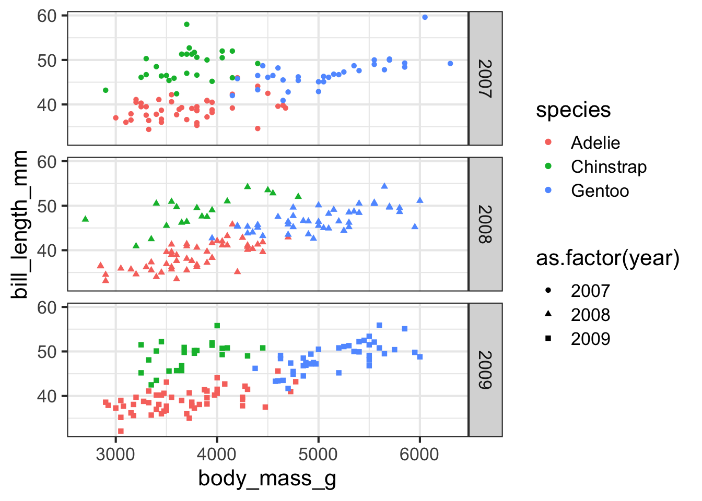
Now that the basic components of the plot are in place, we can start altering other aesthetics. For example, we’ll increase the size of the data points, change the x- and y-axis labels, and get rid of the grid lines in the background.
ggplot(penguins, aes(x = body_mass_g,
y = bill_length_mm,
colour = species,
shape = as.factor(year))) +
geom_point(size = 2) +
facet_grid(as.factor(year)~.) +
xlab("Body Mass (g)") +
ylab("Bill Length (mm)") +
theme_bw(base_size = 16) +
theme(panel.grid = element_blank())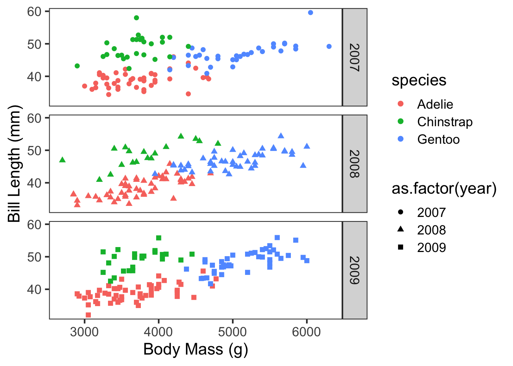
By continuing to alter layers in ggPlot, you can fairly quickly arrive at near publication-ready figures. Remember, ggPlot builds the graphics from the back to the front - layers later in the code will be placed on top of the previous layers. For example, run the following code with the geom_smooth layer after the geom_point layer. How did it affect the plot?
ggplot(penguins, aes(x = body_mass_g,
y = bill_length_mm,
colour = species,
shape = as.factor(year))) +
geom_smooth(method = "lm", se = T, size = 1) +
geom_point(size = 2) +
scale_colour_manual(values = c("forestgreen", "gold", "cornflowerblue")) +
facet_grid(as.factor(year)~.) +
guides(shape = "none") +
xlab("Body Mass (g)") +
ylab("Bill Length (mm)") +
theme_bw(base_size = 16) +
theme(panel.grid = element_blank())
## Warning: Using `size` aesthetic for lines was deprecated in ggplot2 3.4.0.
## ℹ Please use `linewidth` instead.
## `geom_smooth()` using formula = 'y ~ x'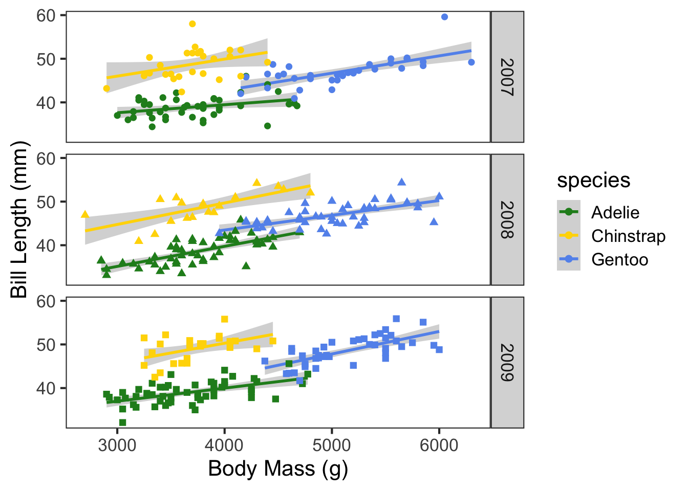
Let’s say, however, that we wanted to change which species is shown in green and which is shown in blue. We could attempt to change that by switching up the order of colors in the vector, but it’s going to be much faster to just specify which color should be assigned to which species. This can save a lot of time and frustration, especially when working with many groups. The easiest way to assign colors to groups is using a named vector.
species_colors = c("Gentoo" = "forestgreen", "Chinstrap" = "gold", "Adelie" = "cornflowerblue")
ggplot(penguins, aes(x = body_mass_g,
y = bill_length_mm,
colour = species,
shape = as.factor(year))) +
geom_smooth(method = "lm", se = T, size = 1) +
geom_point(size = 2) +
scale_colour_manual(values = species_colors) +
facet_grid(as.factor(year)~.) +
guides(shape = "none") +
xlab("Body Mass (g)") +
ylab("Bill Length (mm)") +
theme_bw(base_size = 16) +
theme(panel.grid = element_blank())
## `geom_smooth()` using formula = 'y ~ x'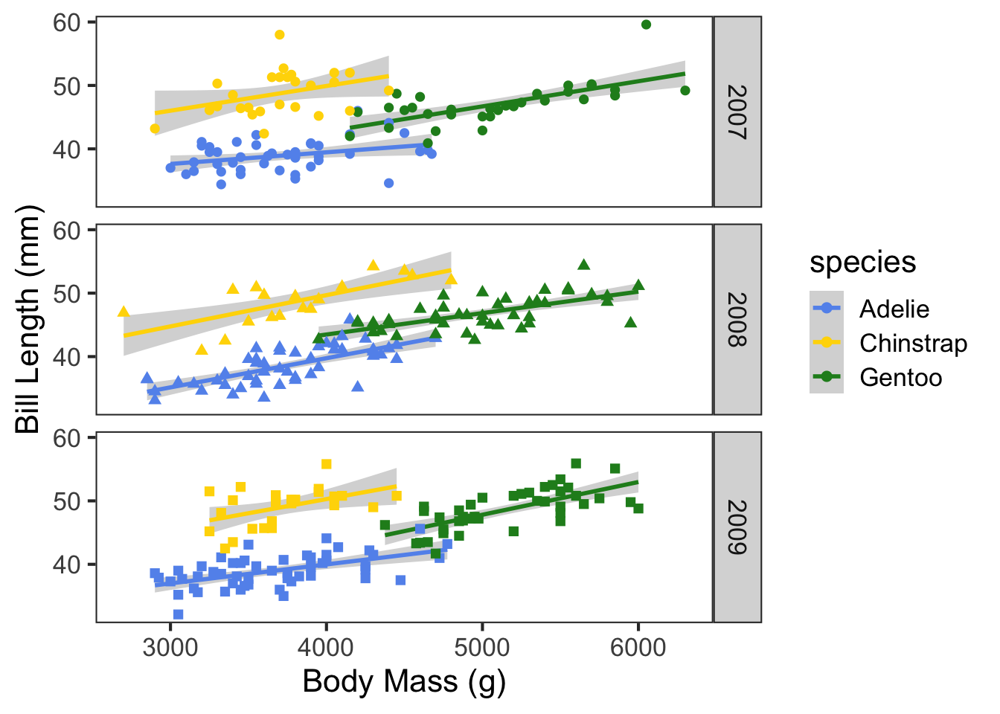
These aesthetic decisions may seem frivolous, but can strongly affect the interpretation of your data by the audience. Ask yourself, are you more likely to think critically about data if it’s presented in the above figure, or the below figure?
ggplot(penguins, aes(x = body_mass_g, y = bill_length_mm, colour = species, shape = as.factor(year), group = species)) +
geom_point(size = 3) +
geom_smooth(method = "lm", colour = "coral") +
scale_colour_manual(values = c("green", "yellow", "skyblue")) +
xlab("Mass") +
ylab("Length") +
theme_bw(base_size = 16) +
theme(panel.background = element_rect(fill = "blue"),
panel.grid = element_line(colour = "red"))
## `geom_smooth()` using formula = 'y ~ x'
## Warning: The following aesthetics were dropped during statistical transformation: shape
## ℹ This can happen when ggplot fails to infer the correct grouping structure in
## the data.
## ℹ Did you forget to specify a `group` aesthetic or to convert a numerical
## variable into a factor?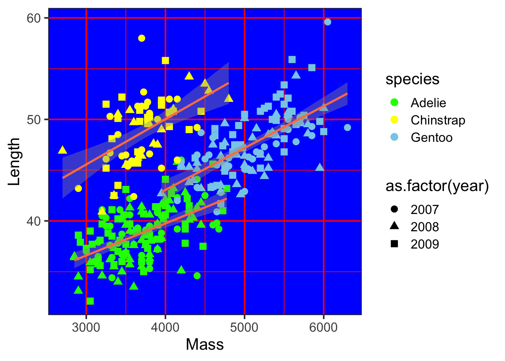
Remember that the process of data visualization is separate from, but not independent of formal statistical analysis. In this example, we may be interested in how the relationship between bill length and body mass differs between species and across years. In many cases, figures are useful visual aids to more rigorous statistical tests. We will cover some of these analyses in a later tutorial.
One of the advantages of ggPlot is that this same grammar can be used to create a wide range of graphics. Several different types are illustrated below.
ggplot(penguins, aes(x = body_mass_g, fill = species)) +
geom_histogram(colour = "black", size = 0.3, binwidth = 100) +
scale_fill_manual(values = c("forestgreen", "gold", "cornflowerblue")) +
facet_grid(species~.) +
ylab("Frequency") +
xlab("Body Mass (g)") +
guides(fill = "none") +
theme_bw(base_size = 16) +
theme(panel.grid = element_blank())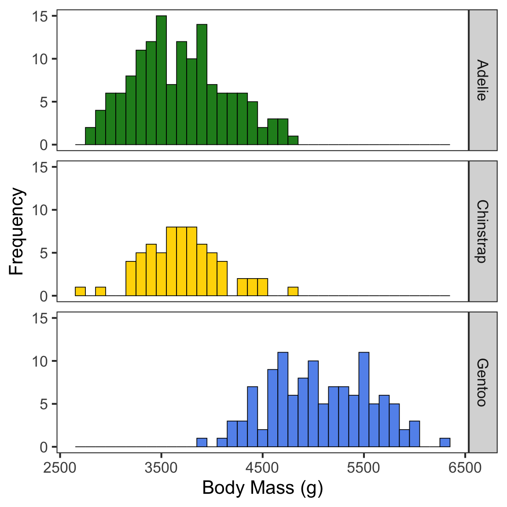
ggplot(penguins, aes(x = species, y = body_mass_g, fill = sex)) +
geom_boxplot() +
xlab("Species") +
ylab("Body Mass (g)") +
theme_bw(base_size = 16) +
theme(panel.grid = element_blank())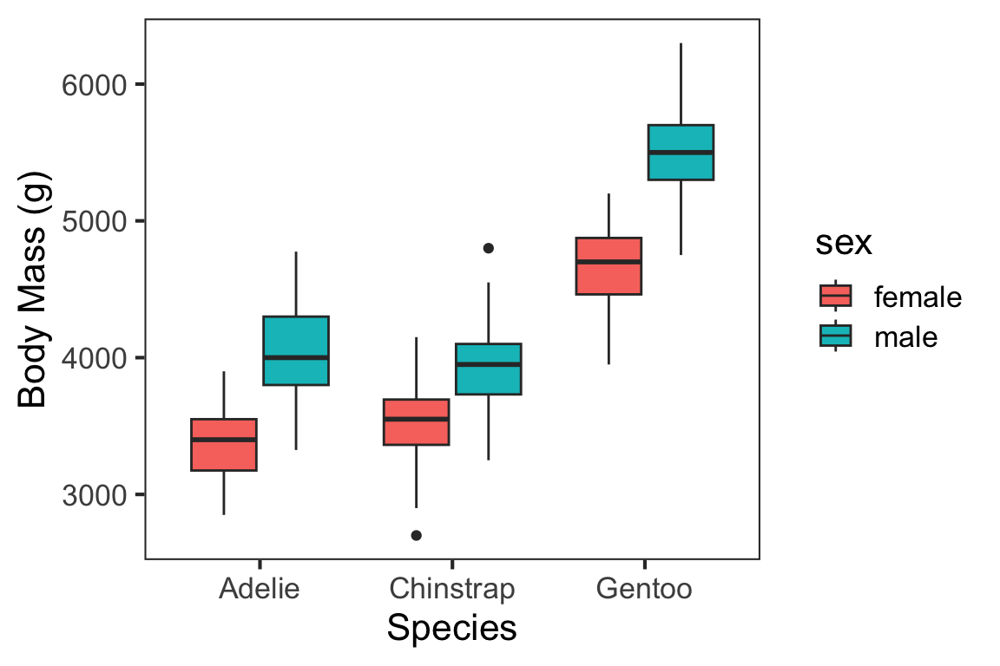
Keep in mind, this is only the briefest introduction to ggPlot. However, the two books referenced at the beginning contain information about most of the other geoms and aesthetics, useful tips and tricks, and other information you’d need to create any data visualization you would need. The R Graphics Cookbook is especially useful when you’re starting out as it provides code “recipes” for different types of ggPlots. If you run into issues, Google is your best friend. Because ggPlot is one of the most popular graphics packages, there are innumerous discussion boards, question and answer forums, and other resources that you can access. It’s almost guaranteed someone else has had the same question as you, asked it online, and had it answered in a dozen different ways. Another interesting resource is a project called “TidyTuesday”, during which people practice their data manipulation, analysis, and visualization skills. Intended primarily to help people practice their skills with the TidyVerse (covered in a later tutorial), the end product is typically a graphic created with ggPlot. These end products, and their associated code, are often shared via Twitter and GitHub.